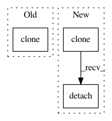

f0eea66ce83fc59910c623aa4e50ddfdd1f3ae7b,test/lazy/test_matmul_lazy_variable.py,TestMatmulLazyVariable,test_matmul,#TestMatmulLazyVariable#,14
Before Change
mat = Variable(torch.randn(4, 10))
res = covar.matmul(mat)
lhs_clone = Variable(lhs.data.clone(), requires_grad=True)
rhs_clone = Variable(rhs.data.clone(), requires_grad=True)
mat_clone = Variable(mat.data.clone())
actual = lhs_clone.matmul(rhs_clone).matmul(mat_clone)
After Change
mat = torch.randn(4, 10)
res = covar.matmul(mat)
lhs_clone = lhs.clone().detach()
rhs_clone = rhs.clone().detach()
mat_clone = mat.clone().detach()
lhs_clone.requires_grad = True
rhs_clone.requires_grad = True
In pattern: SUPERPATTERN
Frequency: 3
Non-data size: 3
Instances
Project Name: cornellius-gp/gpytorch
Commit Name: f0eea66ce83fc59910c623aa4e50ddfdd1f3ae7b
Time: 2018-08-06
Author: gpleiss@gmail.com
File Name: test/lazy/test_matmul_lazy_variable.py
Class Name: TestMatmulLazyVariable
Method Name: test_matmul
Project Name: Zhaoyi-Yan/Shift-Net_pytorch
Commit Name: dc9aafd83851f7c55c6fe61702e281856ec023ca
Time: 2018-12-13
Author: yanzhaoyi@outlook.com
File Name: models/accelerated_shift_net/accelerated_InnerShiftTripleFunction.py
Class Name: AcceleratedInnerShiftTripleFunction
Method Name: forward
Project Name: cornellius-gp/gpytorch
Commit Name: f0eea66ce83fc59910c623aa4e50ddfdd1f3ae7b
Time: 2018-08-06
Author: gpleiss@gmail.com
File Name: test/lazy/test_root_lazy_variable.py
Class Name: TestRootLazyVariable
Method Name: test_matmul